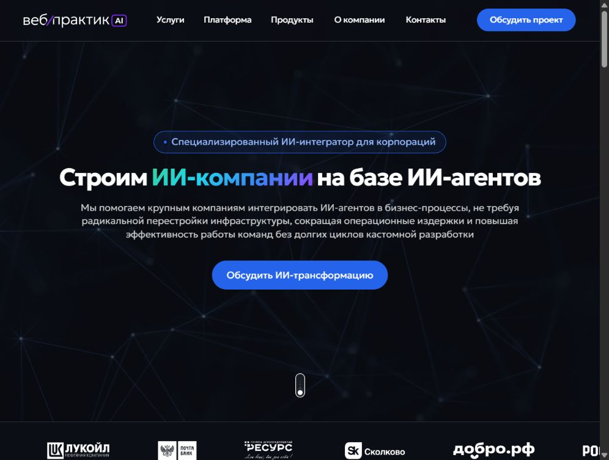
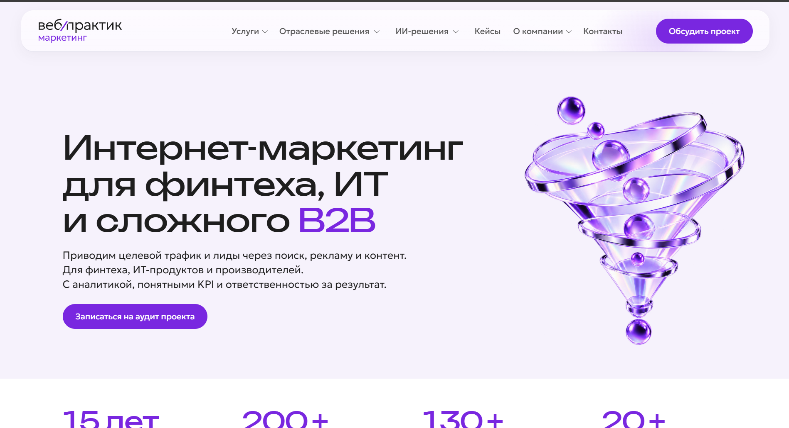
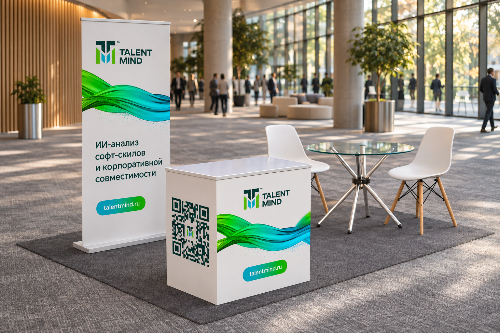

01B2B · UX/UI

АШАН Бизнес
UX/UI · Корзина · Лояльность · CheckoutРазвитие отдельных сценариев корпоративных закупок в существующей платформе.
Интерфейсы, аналитика и сайты. Разные задачи — от конкретного UX‑сценария до реализации целого проекта.
Развитие отдельных сценариев корпоративных закупок в существующей платформе.

Визуальное оформление аналитики для образовательных организаций.

Быстрый запуск сайта AI‑продукта: Figma, адаптивы и Tilda.

Остальные страницы в Figma и многостраничная реализация на Tilda.

Правила бренда, MVP и детальная работа над сайтом с ИИ.

Сайт с нуля на Tilda и SEO. Путь от знакомства со школой до заявки на пробный урок.

Промостойка, буклет и стикеры для презентации ИИ‑сервиса для рекрутеров.

Фирменная графика и типографика для одежды и аксессуаров команды.

Сайт премии социальных инициатив для ассоциации «Добро.рф».
Расскажу о своём опыте и покажу проекты, близкие вашим задачам.